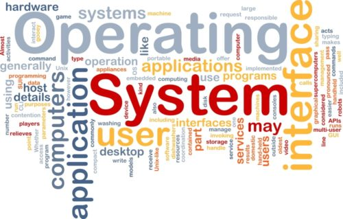

Picture

Sistem Operasi

Sistem operasi Sistem komputer
Prosess

Sistem Komputer

Executive Sumarry berdasarkan sub bab Sistem Operasi
Website ini memuat seperti pada judulnya, disini kita akan membahas tentang apa yang kita dapatkan dalam materi Sistem Operasi. Dengan begitu kami dapat memaparkan tentang Executive Sumarry dari materi-materi yang pernah dibahas sebelumnya. Dengan dibuatnya Executive Summary, diharapkan dapat membantu mempermudah pembaca dalam memahami materi terkait.
System computer terdiri dari gabungan elemen-elemen dasar, karena ...
Read moreSystem computer terdiri dari 3 elemen yaitu software, hardware dan ...
Read moreTipe penjadwalan di prosessor preemptive sama dengan penjadwalan di ...
Read moreSystem computer terdiri dari gabungan elemen-elemen dasar, karena elemen-elemen inilah yang nantinya membuat system computer dapat berjalan.
Elemen yang paling penting adalah cpu, tentu saja Prosessor lah yang menjadi otak atau inti dari sebuah cpu. Tetapi tidak hanya prosessor saja yang berperan penting disini, system computer dapat dijalankan minimal mempunyai prosessor, memori utama, perangkat masukan dan keluaran dan interaksi antar komponen.
Prosessor berfungsi untuk mengatur atau mengendalikan setiap kegiatan computer. Memori utama berfungsi sebagai penyimpanan sebuah data. Perangkat masukan dan pengeluaran berfungsi sebagai pemindahan data dari computer. Interaksi antar komponen ini berfungsi untuk menghubungkan ketiga perangkat diatas, oleh karena itu interaksi antar komponen ini sangat berperan dalam menjalankan fungsi system computer.
Sistem operasi merupakan program penghubung antara user dengan hardware. Sistem operasi dapat didefinisikan sebagai Resource Allocator, Program Control, kernel.
Tujuan dari sistem operasi adalah mempermudah seseorang untuk menjalankan program dalam komputer dan juga memaksimalkan kinerja komputer. Sistem operasi sebagai interface antara pengguna dan computer pada umumnya menyediakan berbagai layanan, contohnya yaitu pembuatan program, utilitas, instruksi perangkat input/output, akses kontrol ke file.
Sumber daya computer secara umum dibedakan atas dua bagian, yaitu sumber daya phisik dan sumber daya abstrak. Didalam sumber daya phisik terdapat keyboard, mouse, cd rom, printer, layar monitor, perangkat grafis, ram, cache memory, dsb. Didalam sumber daya abstrak dibedakan menjadi dua, yaitu Data dan Program, terdapat program utilitas dan program aplikasi.
Sistem operasi berevolusi sesuai dengan perkembangan zaman, sesuai dengan kebutuhan user, hardware juga mempengaruhi berevolusinya sistem operasi. Siste operasi berkembang selaras dengan berkembangnya hardware dan juga terus dilakukan perbaikan-perbaikan pada sistem operasi agar selalu bekerja dengan maksimal dan memenuhi kebutuhan user.
Prosess merupakan perjalanan, tetapi dalam sebuah system operasi proses disini diartikan sebagai pengekekusi intruksi computer. Artinya prosess mengatur jalannya sebuah intruksi, dengan kata lain mengendalikan prosess yang terjadi.
Proses bekerja dengan pengalokasian sumber daya meliputi multiprogramming, multiprocessing, dan distributed processing. Dalam pekerjaanya prosess akan berada pada salah satu state yaitu running, ready, blocked, new dan exit. Didalam proses juga terdapat penundaan prosess atau suspended process artinya dalam proses terjadi penundaan dalam pemrosesan. Kemudian yang berperan penting dalam prosess adalah PCB yang berfungsi untuk pengelolaan proses informasi.
Proses juga memiliki banyak operasi meliputi penciptaan, penghancuran, penundaan, pelanjutan, pengubahan prioritas, memblok, membangun, menjadwal proses. Operasi-operasi ini lah yang terjadi saat prosess melakukan pemrosessan.
System computer terdiri dari 3 elemen yaitu software, hardware dan brainware. System computer tidak akan berfungsi optimal jika salah satu dari ketiga komponen itu tidak ada.
Hardware minimal yang harus dimiliki meliputi prosessor, memori, perangkat masukan & pengeluaran dan interaksi antar komponen. Prosessor berfungsi sebagai pengolahan data beserta pengendali system computer. Memori berfungsi sebagai media penyimpanan data. Perangkat I/O berfungsi sebagai pemindahan data computer. Interaksi antar komponen berfungsi sebagai penghubung anatara ketiga elemen.
Software merupakan kumpulan program yang mempunyai fungsi, dengan kata lain non-fisik lawan katanya dengan hardware. Didalam software inilah system operasi berada. System operasi merupakan sebuah software untuk menjalankan system computer, maka dari itulah terjadilah perpaduan antara system operasi dan system computer.
Brainware merupakan otak untuk mengendalikan system computer, tentu saja manusialah yang mempunyai otak untuk mengendalikan system computer. Artinya manusia juga berperan penting untuk jalannya sebuah system computer, tanpa adanya manusia untuk mengendalikan, system computer tidak akan ada yang berjalan.
Proses merupakan unit kerja yang melakukan pengeksekusi suatu program. Semua program yang dijalankan tentunya akan melalui proses terlebih dahulu. Karena itulah proses terdiri dari 3 keadaan meliputi running, ready, dan blocked.
Proses juga melakukan penciptaan proses, pnghancuran proses, penundaan proses, pelanjutan kembali proses dan lain sebagainya.
Dalam melakukan kerjanya, system operasi memerlukan banyak informasi untuk pengolahan proses. Kemudian informasi inilah yang berada pada PCB, PCB inilah yang akan memanajemen sebuah proses. Prosess akan di implementasikan kedalam sebuah table. Dalam table inilah semua kegiatan proses akan di record. Setipa proses memiliki ID unik guna sebagai index ke table untuk mengambil PCB, sehingga PCB dapat mengendalikan sebuah proses.
Penjadwalan di prosessor merupakan penjadwalan untuk memutuskan mana yang harus berjalan dan kapan harus berjalan serta berapa waktu yang diperlukan. Penjadwalan disini terbagi menjadi 3 yaitu penjadwalan pendek, menengah dan panjang dengan 2 strategi penjadwalan yaitu preemptive dan nonpreemptive.
Algoritma penjadwalan nonpreemptive meliputi FIFO (First-in, first out), SJF (Shortest Job First), HRN (Higest-ratio next) dan MFQ (Multiple Feedback Queues). Algoritma penjadwalan preemptive meliputi RR (Round robin), SRF (Shortest remaining first), PS (priority schedulling), GS (Guaranteed Schedulling).
Algoritma-algoritma diatas digunakan untuk menentukan penjadwalan prosess. Artinya digunakan dalam menentukan proses mana yang akan berjalan, kapan harus berjalan serta berapa waktu yang dibutuhkan.
Tipe penjadwalan di prosessor preemptive sama dengan penjadwalan di prosessor biasa. Karena sama tentu tujuannya pun sama memutuskan mana yang harus berjalan dan kapan harus berjalan serta berapa waktu yang diperlukan.
Perbedaan dari penjadwalan di prosessor preemptive ialah terletak pada algoritma penjadwalan prosess. Dalam penjadwalan di prosessor preemptive menggunakan algoritma RR (Round robin), SRF (Shortest remaining first), PS (priority schedulling), GS (Guaranteed Schedulling). Dalam hal ini menekankan algoritma proses terpendek akan dipertamakan.